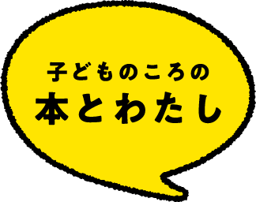

富安陽子（とみやす・ようこ）
1959年東京都に生まれる。『クヌギ林のザワザワ荘』で日本児童文学者協会賞新人賞、小学館文学賞、「小さなスズナ姫」シリーズで新美南吉児童文学賞受賞など作品多数。


『楽しいムーミン一家』『エルマーとりゅう』『メアリー・ポピンズ』など、小学校低学年から海外の児童文学を読んでいました。
私にはお話好きの祖母や読書家の叔母がいて、たくさんの物語と出会うことができたんです。私は体が小さくて、かけっこも遅いし、給食も食べきれない。だから、「運動会で失敗しちゃったらどうしよう」「明日の縄跳びのテスト、うまくできるかな」と日常の中で毎日のようにピンチが訪れました。
その度に、本の世界から頑張る力をもらいました。例えば、『長くつ下のピッピ』の世界に浸って、「ごたごた荘に行くとピッピと遊べるんだから！」と勇気をもらうことができたんです。
私にはお話好きの祖母や読書家の叔母がいて、たくさんの物語と出会うことができたんです。私は体が小さくて、かけっこも遅いし、給食も食べきれない。だから、「運動会で失敗しちゃったらどうしよう」「明日の縄跳びのテスト、うまくできるかな」と日常の中で毎日のようにピンチが訪れました。
その度に、本の世界から頑張る力をもらいました。例えば、『長くつ下のピッピ』の世界に浸って、「ごたごた荘に行くとピッピと遊べるんだから！」と勇気をもらうことができたんです。

私はこれまでたくさんの児童文学や絵本を書いてきました。今は書き手となりましたが、子どもの頃は熱心な読者でもありました。
児童文学を読むおもしろさは、自分と同世代の子どもが主人公として活躍している姿を見られることです。私もそうでしたが、小学校高学年くらいになると大人向けの小説も読むことができるようになります。
しかし、大人の文芸において子どもはあくまでも脇役。児童文学は、同世代の主人公の目線で展開する物語を味わいながら、主人公の揺らぎを自分のことのように感じて、悲しんだり、また喜んだりすることができます。主人公の活躍に勇気が湧くこともあるでしょうし、「こんなふうに悩むのは自分だけではなかったんだ！」と励まされることもあると思うんです。主人公と自分を重ねることで、大きな感情の動きを得られるのが児童文学のおもしろさだと感じています。
私が書く物語はフィクションです。鬼や幽霊が出てきたり、信じられないような冒険をすることもある。でも、遠い世界のことを書いている感覚はなく、物語の糸口は常に暮らしの中にあります。
物語というのは、今生きているこの社会や日常とどこかで必ずつながっています。「現実と物語を行き来できる楽しみを多くの子に味わってもらえたらな…」、そんな思いで一冊一冊を送り出しています。
とはいえ、まだ本のおもしろさと出会えていない子もいるでしょう。そんな子には、簡単に、「読書は楽しくないもの」と決めつけてほしくはありません。一冊でもおもしろい本と出会えたら、ガラリと考え方が変わるからです。
幸いにも私には、私の好みをよく知っていて、同時におもしろい本も知っている、よき選書家の叔母がいました。叔母が手渡してくれた本はことごとくおもしろかったんです。こうした本との出会いをつくってくれる人がいると、「あなたの好みの一冊」に出会える確率はグッと上がります。学校の先生でもいいですし、図書館司書の方でもいい。おすすめの本を尋ねてみてはいかがでしょうか。
また、今回の「お気に入りの一冊をあなたへ 読書推せん文コンクール」もよい機会だと思います。同世代の子がすすめてくれる作品に触れて、本と出会うチャンスのひとつにしてほしいと願っています。
一冊のお気に入りの本が見つかったら、「この本が好きなら、きっとこれも好きだよ」と教えてくれる人があらわれます。そうすると、一気に読書が好きになる。実際に、「ある一冊を読んだらおもしろくて、それ以降読書に夢中になりました」という子に、私はたくさん出会ってきました。
私は小さい頃、家族によく読み聞かせをしてもらっていました。あるとき、文字を読めるようになった私に叔母が、「本というのは読んでもらうより自分で読むほうが楽しいよ」と言いました。読み聞かせも十分に楽しかったので、その時は「本当かな？」と思っていたんです。
しかし、自分のペースで本と付き合っていくことは、本当に楽しいものでした。一冊の本と離れがたかったら何十回読んでもいいですし、好きな場面があれば何回でも繰り返してそこを読めばいい。自分だけの楽しみ方ができるのです。
現在は、読書の他にも、アニメや映画、動画などたくさんのエンターテインメントがあります。その楽しみを否定はしません。でも、例えば本で「不気味な男が突然ドアのかげからあらわれた」という一文が書かれていたら、その男の声が地鳴りのような声なのか、ねっとりした声なのか、耳元で囁くような声なのか、読者によって想像することが違ってきます。
一方で、アニメの場合には誰もが同じ声を聞いている。読書の楽しさというのは、オリジナルな世界を自分で作りながら楽しんでいけることだと思います。こうしたエンターテインメントは、他にはないのではないでしょうか。
好きな本は、あなたの隠れ家になり、友達になり、自分だけの世界の入口になりえます。大好きな本と出会い、その世界をぜひ満喫してください。
児童文学を読むおもしろさは、自分と同世代の子どもが主人公として活躍している姿を見られることです。私もそうでしたが、小学校高学年くらいになると大人向けの小説も読むことができるようになります。
しかし、大人の文芸において子どもはあくまでも脇役。児童文学は、同世代の主人公の目線で展開する物語を味わいながら、主人公の揺らぎを自分のことのように感じて、悲しんだり、また喜んだりすることができます。主人公の活躍に勇気が湧くこともあるでしょうし、「こんなふうに悩むのは自分だけではなかったんだ！」と励まされることもあると思うんです。主人公と自分を重ねることで、大きな感情の動きを得られるのが児童文学のおもしろさだと感じています。
私が書く物語はフィクションです。鬼や幽霊が出てきたり、信じられないような冒険をすることもある。でも、遠い世界のことを書いている感覚はなく、物語の糸口は常に暮らしの中にあります。
物語というのは、今生きているこの社会や日常とどこかで必ずつながっています。「現実と物語を行き来できる楽しみを多くの子に味わってもらえたらな…」、そんな思いで一冊一冊を送り出しています。
とはいえ、まだ本のおもしろさと出会えていない子もいるでしょう。そんな子には、簡単に、「読書は楽しくないもの」と決めつけてほしくはありません。一冊でもおもしろい本と出会えたら、ガラリと考え方が変わるからです。
幸いにも私には、私の好みをよく知っていて、同時におもしろい本も知っている、よき選書家の叔母がいました。叔母が手渡してくれた本はことごとくおもしろかったんです。こうした本との出会いをつくってくれる人がいると、「あなたの好みの一冊」に出会える確率はグッと上がります。学校の先生でもいいですし、図書館司書の方でもいい。おすすめの本を尋ねてみてはいかがでしょうか。
また、今回の「お気に入りの一冊をあなたへ 読書推せん文コンクール」もよい機会だと思います。同世代の子がすすめてくれる作品に触れて、本と出会うチャンスのひとつにしてほしいと願っています。
一冊のお気に入りの本が見つかったら、「この本が好きなら、きっとこれも好きだよ」と教えてくれる人があらわれます。そうすると、一気に読書が好きになる。実際に、「ある一冊を読んだらおもしろくて、それ以降読書に夢中になりました」という子に、私はたくさん出会ってきました。
私は小さい頃、家族によく読み聞かせをしてもらっていました。あるとき、文字を読めるようになった私に叔母が、「本というのは読んでもらうより自分で読むほうが楽しいよ」と言いました。読み聞かせも十分に楽しかったので、その時は「本当かな？」と思っていたんです。
しかし、自分のペースで本と付き合っていくことは、本当に楽しいものでした。一冊の本と離れがたかったら何十回読んでもいいですし、好きな場面があれば何回でも繰り返してそこを読めばいい。自分だけの楽しみ方ができるのです。
現在は、読書の他にも、アニメや映画、動画などたくさんのエンターテインメントがあります。その楽しみを否定はしません。でも、例えば本で「不気味な男が突然ドアのかげからあらわれた」という一文が書かれていたら、その男の声が地鳴りのような声なのか、ねっとりした声なのか、耳元で囁くような声なのか、読者によって想像することが違ってきます。
一方で、アニメの場合には誰もが同じ声を聞いている。読書の楽しさというのは、オリジナルな世界を自分で作りながら楽しんでいけることだと思います。こうしたエンターテインメントは、他にはないのではないでしょうか。
好きな本は、あなたの隠れ家になり、友達になり、自分だけの世界の入口になりえます。大好きな本と出会い、その世界をぜひ満喫してください。

質問：文章を書くコツを教えてください。
富安さんの答え：原稿の分量に合った内容を選ぶようにしましょう。例えば、「原稿用紙10枚の短編小説を書きましょう」というお題があったときに、１００枚コースの長編の材料を盛り込もうとしても無理があります。文章を書く際には、まず材料を集めてみて、器にふさわしいかを確認する必要があります。そして、分量と素材がマッチしているかどうかは、自分が書きたいのと同じくらいの長さの文章を読んでみることでわかってきます。
質問：いつも一文目の書き出しに悩んでしまいます。どうしたらよいでしょう？
富安さんの答え：最初の一文だけ決めてしまうというのは一つの手です。固定すると悩まずにすみますよね。ルールを自分で決めて書いていくと、ゲームのように楽しめます。「今日はこの一文から始めてみよう」「次回は変えてこれにしよう」と作文を書くトレーニングをしていくと、一文を書き始めることに抵抗感がなくなっていきます。それが、文章を書くことに怯まなくなる第一歩です。

あなたのお気に入りの本を「誰に読んでほしいか」考えてみましょう。「子どもにすすめられて、『シノダ！』シリーズに夢中になりました」とお手紙をいただいたことがあります。大人も子どものおすすめを聞きたがっているんです。お父さん、お母さん、先生にでもいいです。誰に向けて書くかを決めると、「どう読んでほしいか」「何がおもしろかったか」など一冊の本を挟んで会話するように書くことができるはずです。